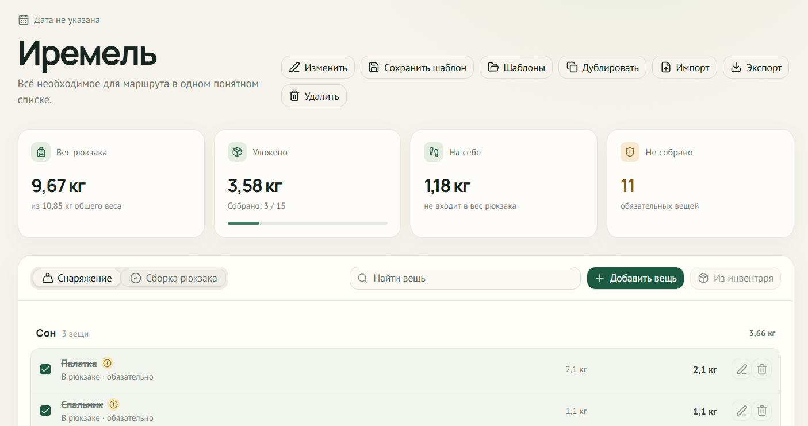
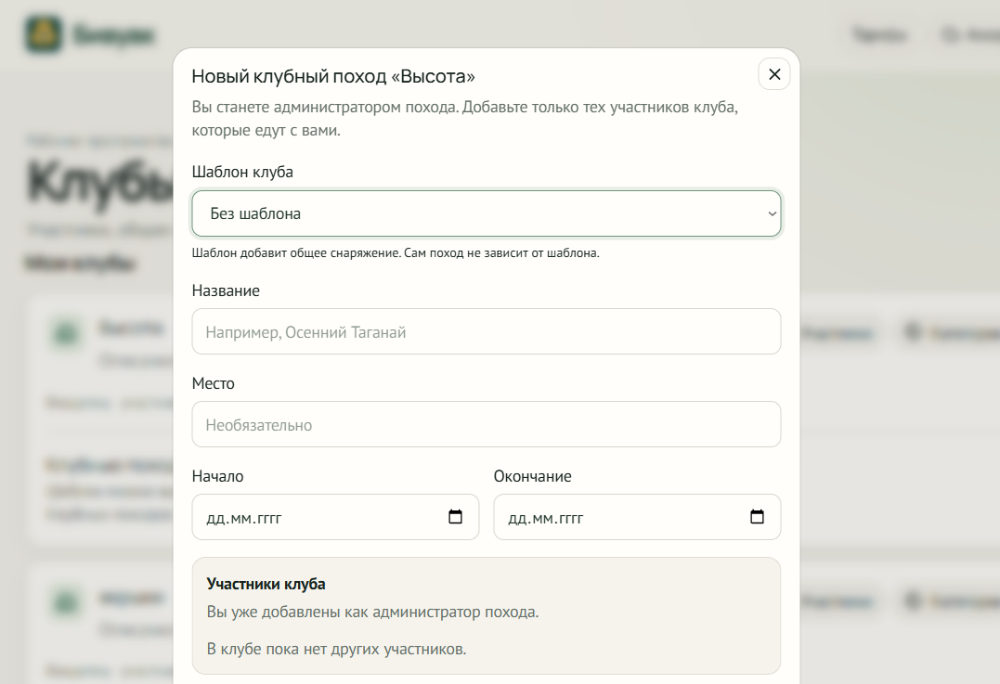

Приложение
Что уже работает
В «Бивуаке» можно вести инвентарь, собирать список для похода, считать вес рюкзака, пользоваться категориями и шаблонами, учитывать КБЖУ продуктов. Для групп и клубов есть приглашения, роли, общее снаряжение, ответственные, готовность участников и журнал действий.

Моя роль
Выбираю приоритеты, проектирую интерфейс, формулирую задачи для разработки и проверяю результат.
Как устроен продукт
Веб-приложение с API, аккаунтами, облачной синхронизацией и PostgreSQL.
Сложность
Что пришлось переделать
Для личного списка достаточно знать, кому принадлежит вещь. В группе нужно решить, кто отвечает за общее снаряжение и кто может менять данные. Я пересмотрел модель данных и правила доступа, чтобы поддержать эти сценарии.
Отдельная проблема — одновременное редактирование. Чтобы одно изменение не затёрло другое, приложение проверяет версию данных. После этого я стал раньше описывать роли и исключения: так проще понять, что именно нужно проверить перед выпуском.

Разработка
Как использую AI
С Codex работаю над кодом и тестами; Claude помогает разбирать требования и документацию. Для пользователей «Бивуака» AI-функций сейчас нет.
AI иногда предлагает изменение, которое выглядит удобным в одном месте, но плохо сочетается с остальным приложением. Поэтому я сверяю такие предложения с архитектурой, запускаю проверки и сам принимаю результат.
Сейчас
Что дальше
Приложение опубликовано и подготовлено к закрытому пилоту. Следующий шаг — дать его небольшой группе пользователей, собрать обратную связь и проверить реальные сценарии работы.